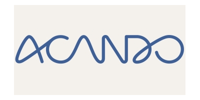

Body
Acando
Digitalt konsulentselskap
Acando er et konsulentselskap som jobber med digitale transformasjoner i offentlig og private virksomheter. Teknologi er en sentral driver til forandring, men det er brukerens evne og ønske om å ta teknologien i bruk som skaper verdi. Med teknisk spisskompetanse og inngående innsikt i brukeratferd og forretningsutvikling drevet av digitalisering, skaper vi idéer, løsninger og mobiliserer organisasjoner til forandring. Et av våre satsningsområder er Smart City der Intelligente Transportsystemer (ITS) og selvkjørende minibusser i alminnelig trafikkmiljø, er en del av satsningen.
Team

Frode Kjos Director Smart Transport
95913285
frode.kjos@acando.no

Dan Vigeland Director Smart City
93248286
dan.vigeland@acando.no

Acando
Digitalt konsulentselskap
Tordenskioldsgate 8-10, 0160 Oslo
93001000
https://www.acando.no/
Dan Vigeland
Privat
SBN medlem
SBN Prime medlem
Tags
Selvkjørende, autonom, smart transport, smart mobility, buss